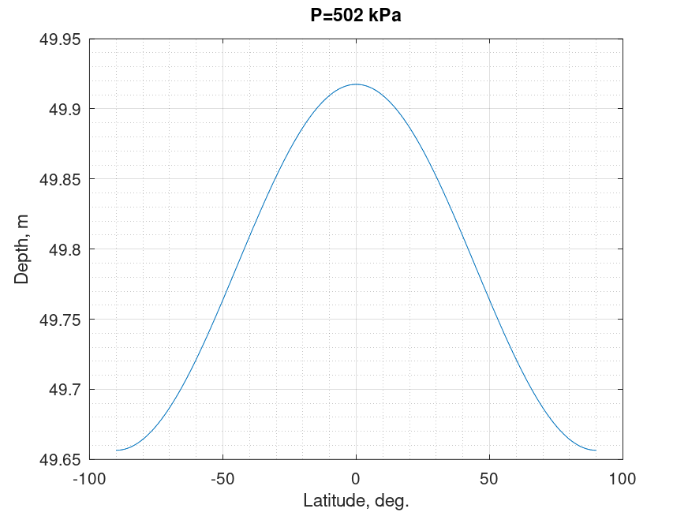

Pressure to depth conversion. Leroy '97 equation
Mathematical definition
$$\boxed{Z\left( {P,\phi } \right) = \frac{{9.72659 \times {{10}^2}P - 2.512 \times {{10}^{ - 1}}{P^2} + 2.279 \times {{10}^{ - 4}}{P^3} - 1.82 \times {{10}^{ - 7}}{P^4}}}{{g\left( \phi \right) + 1.092 \times {{10}^{ - 4}}P}}}$$
This is an equation for the "standard" ocean. Use corrective terms from the table above for particular applications.
| Notation | Definition | Units | Limits | Conversion |
|---|---|---|---|---|
| $Z$ | depth | $\text{m}$ | ||
| $P$ | pressure | $\text{kPa}$ | $0\ < P < 1000$ | $P\left[ {{\rm{MPa}}} \right] = P\left[ {{\rm{kPa}}} \right] \times {10^{ - 3}}$ |
| $\phi$ | latitude | $\text{deg.}$ | $-90\ < \phi < 90$ |
$$g\left( \phi \right) = 9.780318\left( {1 + 5.2788 \times {{10}^{ - 3}}{{\sin }^2}\left( \phi \right) - 2.36 \times {{10}^{ - 5}}{{\sin }^4}\left( \phi \right)} \right)$$
| Notation | Description | Units |
|---|---|---|
| $g\left( \phi \right)$ | gravity | $\text{ms}^{-2}$ |
Corrective terms for various areas
$${Z_{corrected}} = Z\left( {P,\phi } \right) + \Delta Z\left( P \right)$$
| Area of applicability | Latitude | Expression for $\Delta Z\left( P \right)$, $\text{m}$ | Accuracy $\pm \text{m}$ |
|---|---|---|---|
| Common oceans | $60^\circ N - 40^\circ S$ | $P/\left( {P + 1} \right) + 5.7 \times {10^{ - 2}}P$ | $0.8$ |
| North Eastern Atlantic | $30^\circ N - 35^\circ S$ | $P/\left( {P + 2} \right) + 3 \times {10^{ - 2}}P$ | $0.3$ |
| Circumpolar Antarctic | $4 \times {10^{ - 2}}P - 2 \times {10^{ - 4}}{P^2}$ | $0.1$ | |
| Mediterranean Sea | $- 7 \times {10^{ - 2}}P + 2 \times {10^{ - 3}}{P^2}$ | $0.2$ | |
| Red Sea | $0$ | $0.2$ | |
| Arctic ocean | $0$ | $0.1$ | |
| Sea of Japan | $6 \times {10^{ - 2}}P$ | $0.1$ | |
| Sulu Sea | $8^\circ$ | $0.9P/\left( {P + 1} \right) + 0.17P + 7 \times {10^{ - 4}}{P^2}$ | $0.2$ |
| Halmahera basin | $0^\circ$ | $0.8P/\left( {P + 0.5} \right) + 0.125P$ | $0.1$ |
| Celebes basin | $4^\circ$ | $1.2P/\left( {P + 1} \right) + 6.7 \times {10^{ - 2}}P + 2.2 \times {10^{ - 4}}{P^2}$ | $0.4$ |
| Weber deep | $6^\circ$ | $1.2P/\left( {P + 1} \right) + 6.7 \times {10^{ - 2}}P + 2.2 \times {10^{ - 4}}{P^2}$ | $0.4$ |
| Black Sea | $43^\circ$ | $1.1P$ | $0.1$ |
| Baltic Sea | $60^\circ$ | $1.8P$ | $0.1$ |
Octave/Matlab implementation
function D = pressure_to_depth_sea_leroy_97(P,L)
% Inputs
% P: pressure \ kPa
% L: latitude \ degree \ -90 < L < 90
% Outputs
% D: depth \ m
P = P*1e-3;
G = 9.780318*(1 + (5.2788e-3)*(sind(L).^2) - (2.36e-5)*(sind(L).^4));
D = (9.72659e2)*P - (2.512e-1)*(P.^2) + (2.279e-4)*(P.^3) - (1.82e-7)*(P.^4);
D = D./(G + (1.092e-4).*P);
end
Computational examples

References
- Leroy, Claude C; Parthiot, François, "Depth-pressure relationships in the oceans and seas", 1998